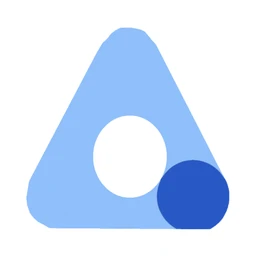

01
Voir enfin le vrai total
Tu entres chaque abonnement une fois, avec sa fréquence : Wallos additionne le mensuel et l'annuel et te montre ce que tu paies vraiment par mois et par an, par catégorie.
Tes abonnements→Wallos→Total mois / an

Tous tes abonnements au même endroit : le vrai total par mois et par an, un rappel avant chaque prélèvement, et de quoi couper ce qui ne sert plus. Gratuit, open source, chez toi.

Wallos est une petite appli web qui tient la liste de tous tes abonnements : streaming, musique, cloud, salle de sport, logiciels, assurances… Pour chacun, tu notes le prix, la fréquence (mois, an ou autre), la catégorie, le moyen de paiement et la prochaine échéance. Il calcule le vrai total par mois et par an, le compare à ton budget, affiche un calendrier des prochains prélèvements et te prévient quelques jours avant chaque paiement (tu choisis combien), ou avant la date d'annulation que tu as fixée. Tu saisis tout toi-même : il ne se connecte jamais à ta banque. L'interface existe en français.
La méthode la plus simple : une commande Docker (ou docker compose) sur un NAS, un mini PC, un serveur ou un Raspberry Pi. Interface web sur le port 8282, données dans une petite base SQLite à toi.
Gratuit, tout reste chez toiSans Docker : NGINX ou Apache, PHP 8.3 et quelques modules, plus des tâches planifiées (cron) pour les rappels et les taux de change. Pour ceux qui ont déjà un serveur web.
Plus techniquePas de version officielle en ligne. Des hébergeurs comme ElfHosted le proposent clé en main (à partir de 1,29 $ par mois dans un forfait). Ta liste est alors sur leurs serveurs. Une démo publique existe pour tester (identifiant et mot de passe : demo, remise à zéro toutes les 2 heures).
Payant, sans installationTu entres chaque abonnement une fois, avec sa fréquence : Wallos additionne le mensuel et l'annuel et te montre ce que tu paies vraiment par mois et par an, par catégorie.
Tu ajoutes l'essai avec sa date de fin et une date d'annulation : quelques jours avant, tu reçois un message sur Telegram ou par mail, et tu résilies à temps.
Trie par prix ou par catégorie, désactive ce qui ne sert plus et regarde ce que tu économises. Les recommandations par IA (facultatives) peuvent pointer les doublons.
Ajoute les membres de ta famille et indique qui paie quoi : Wallos montre la répartition et peut prévenir chacun par mail avant ses échéances.
Fixe un budget mensuel : le tableau de bord compare ton total à ce budget, affiche ce qu'il reste et te signale quand tu le dépasses.
Créé fin 2023 par Henrique (ellite), qui ne trouvait pas d'outil gratuit pour suivre ses abonnements sans payer… un abonnement. Wallos est devenu le suivi d'abonnements auto-hébergé le plus connu. C'est surtout le projet d'un développeur principal, aidé par la communauté.
Plus de 700 commits, version 5.11.1 sur la branche principale au 16 novembre 2026, des nouveautés régulières (OIDC, IA, budget).
Environ 8 600 étoiles et 430 forks sur GitHub, un serveur Discord et des traductions par la communauté ; un seul mainteneur principal.
Tout reste dans ta base chez toi, sans lien bancaire ; seules l'IA (si tu l'actives), la recherche de logos, les taux de change et les notifications passent par des services tiers.
Gratuit et open source, financé uniquement par des dons : pas d'entreprise derrière, l'avenir dépend surtout de son créateur.
Trois ans d'existence et une version 5, très utilisé chez les auto-hébergeurs ; l'appli reste volontairement simple (pas d'appli mobile native, une page web adaptée au téléphone).
Comment on note : 5 critères notés sur 5, vérifiés sur GitHub, le README, la démo et la traduction française de l'interface le 16 novembre 2026. La note sur 10 est la moyenne ramenée sur 10.
Bon pour : Suivre tous les abonnements du foyer, avec rappels et budget, sans lien bancaire
Bon pour : Détecter les abonnements tout seul et les faire résilier, si tu acceptes de connecter ta banque
Bon pour : Une liste simple sur iPhone, pour une seule personne
Bon pour : Faire un premier inventaire, sans rien installer
Aucun de ces outils ne résilie un abonnement à ta place sans ton accord : c'est toi qui annules chez le fournisseur.

Chaque vidéo RepoPop t'explique un dépôt GitHub utile en moins d'une minute, avec son kit comme celui-ci.